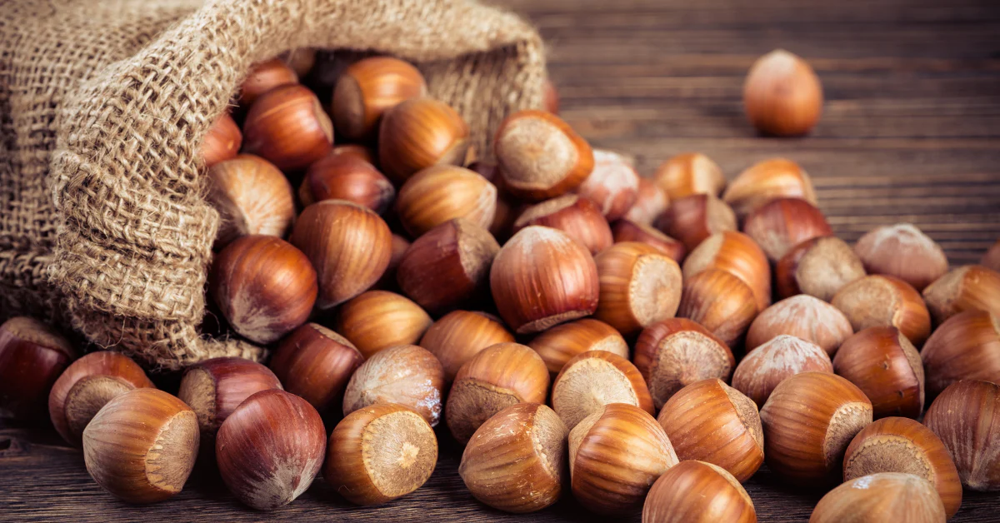

Нашите продукти
В NaturaNuts предлагаме подбрани натурални ядки, подходящи за ежедневна консумация и здравословен начин на живот.
Орехи
Орехите са богати на омега-3 мастни киселини и витамини. Подходящи са за директна консумация и за различни рецепти.

Генерирано с ИИ
Бадеми
Бадемите са отличен източник на енергия и протеини. Подходящи са за спортисти и активни хора.

Генерирано с ИИ
Лешници
Лешниците имат богат вкус и са подходящи както за десерти, така и за здравословни закуски.
Генерирано с ИИ
Кашу
Кашуто е меко и леко сладко, богато на минерали и полезни мазнини.

Генерирано с ИИ
Шамфъстък
Шамфъстъкът е богат на фибри и антиоксиданти, подходящ за междинно хранене.

Генерирано с ИИ